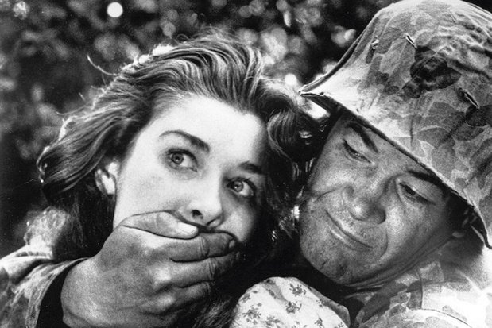

در سال ۱۹۵۱ «الکس سینگر» دوست کوبریک او را تشویق کرد که یک فیلم کوتاه برای شرکت March of Time بسازد. کوبریک موافقت کرد و با هزینه شخصی فیلم روز نبرد را ساخت. اگرچه پخشکننده در همان سال کارش را تعطیل کرد، اما کوبریک توانست فیلم را به قیمت ۱۰۰ دلار به
شرکت «آر.ک. او» (به انگلیسی: RKO) بفروشد. کوبریک کار در مجله لوک را رها کرد و دومین فیلم کوتاهش را با نام کشیش پرنده در همان سال و با سرمایهگذاری RKO ساخت. سومین فیلمش «دریانوردان» اولین فیلم رنگی او به مدت ۳۰ دقیقه، تبلیغی برای
«اتحادیه جهانی ملوانان» بود. این فیلمها همراه با چند فیلم کوتاه دیگر که اکنون باقی نماندهاند، تنها آثار او در گونه سینمای مستند بودند. او همچنین دستیار کارگردان یکی از قسمتهای برنامه تلویزیونی اتوبوس همگانی دربارهه زندگی آبراهام
لینکلن بود.
 هراس و هوس در سال ۱۹۵۳ اولین فیلم داستانی کوبریک بود. هراس و هوس، داستان گروهی سرباز بود که در جنگی خیالی پشت خطوط دشمن گیر افتاده بودند. در پایان آنها درمییافتند که
تصویر دشمنان در واقع همان تصویر خودشان است (بازیگران دو نقش یکی بودند). کوبریک و همسرش توبا متز تنها عوامل فیلم بودند و داستان را دوست کوبریک «هوارد ساکلر» نوشته بود که بعدها نویسنده موفقی شد. فیلم با برخورد خوبی مواجه شد اما توفیق
تجاری نیافت. بعدها وقتی کوبریک کارگردان مهمی شد آن را اثر یک تازهکار که باعث خجالت او است نامید و نگذاشت که در هیچجا به عنوان آثار قبلی او نمایش داده شود. بعدها به شکل غیررسمی به صورت DVD منتشر شد.
زندگی مشترک او با «توبا» دوست دوران مدرسهاش همزمان با ساخت هراس و هوس پایان یافت. او با «روت سوبوتکا» رقصنده اتریشی در سال ۱۹۵۴ ازدواج کرد. او باید در فیلم بعدی کوبریک با
نام بوسهٔ قاتل (۱۹۵۵) هنرنمایی میکرد. بوسه قاتل، همانند هراس و هوس فیلمی کوتاه با زمانی کمتر از یک ساعت بود؛ و همانند آن با توفیق تجاری و انتقادی کمی مواجه شد. فیلم داستان مشتزن سنگینوزنی است که در پایان دوران حرفهای خود درگیر
یک جنایت میشود. این دو فیلم با سرمایه خانوادگی خود کوبریک تهیه شدند.
آلکس سینگر، کوبریک را به تهیهکننده جوانی به نام «جیمز بی. هریس» معرفی کرد و آن دو برای تمام عمر دوست هم باقیماندند. شرکت مشترک آن دو هریس-کوبریک، تهیهکننده سه فیلم بعدی او بود. آن دو حقوق کتاب شکست کامل (به انگلیسی: Clean Break) نوشته «لیونل وایت»
را خریدند، کوبریک و «جیم تامپسون» آن را به داستانی درباره سرقت از یک مسابقه که پایان وحشتناکی دارد تبدیل کردند. «استرلینگ هیدن» در این فیلم بازی کرد.
کشتن اولین فیلم کوبریک با بازیگران و دستاندرکاران حرفهای بود. فیلم بهخوبی از روش داستانگویی غیرخطی استفاده کرده بود که در دهه ۵۰ نامتداول بود و اگرچه توفیق تجاری نیافت ولی با تحسین منتقدان مواجه شد. تحسین زیاد از فیلم توجه استودیوی «مترو گلدوین مایر»
را جلب کرد و به او پیشنهاد ساخت دو فیلمنامه که در اختیار آنها بود داده شد. کوبریک داستان «رازهای آشکار» نوشتهٔ نویسنده آلمانی «اشتفان تسوایگ» را انتخاب کرد. اما آنها پیش از ساخت به توافق نرسیدند.